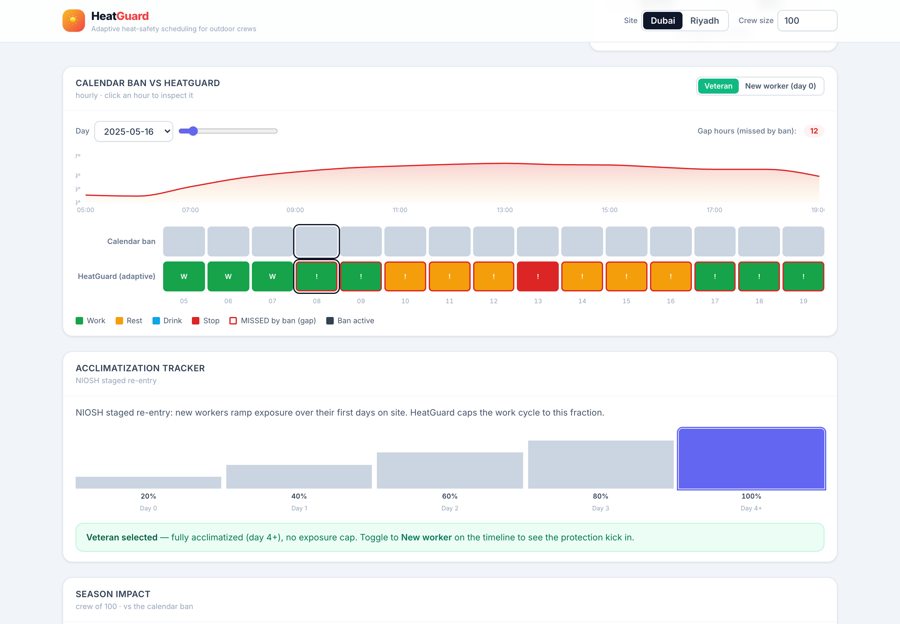
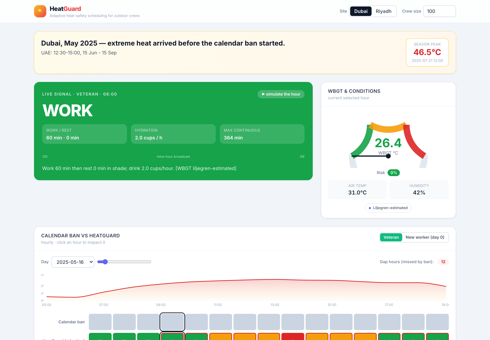
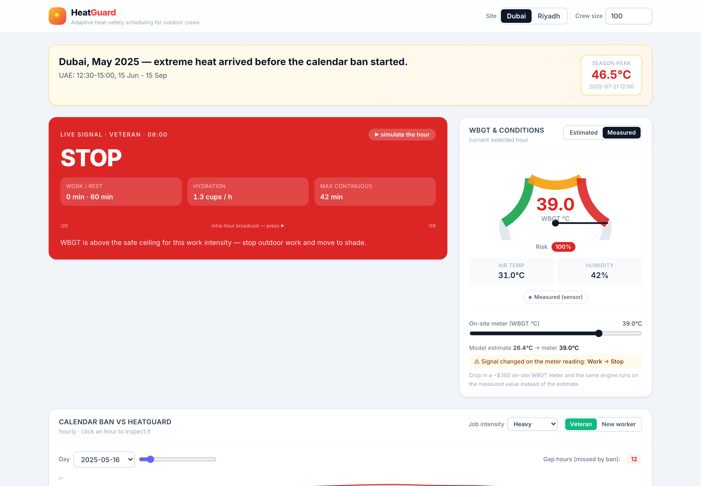
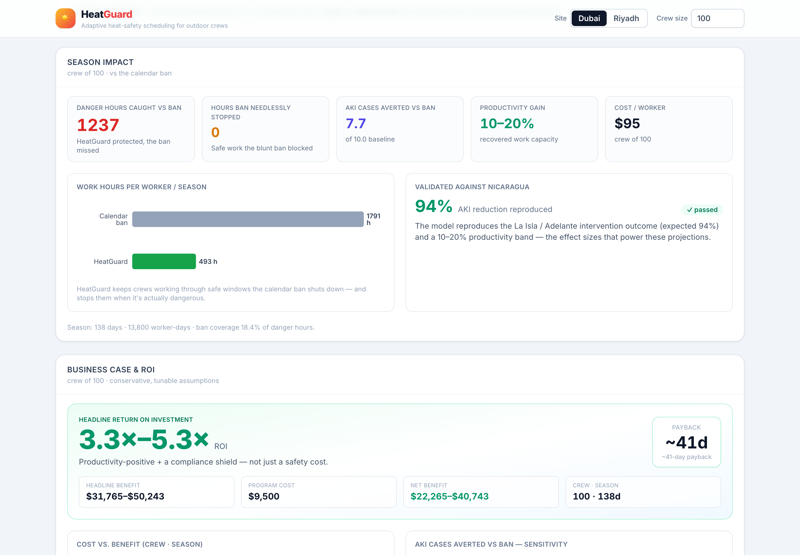
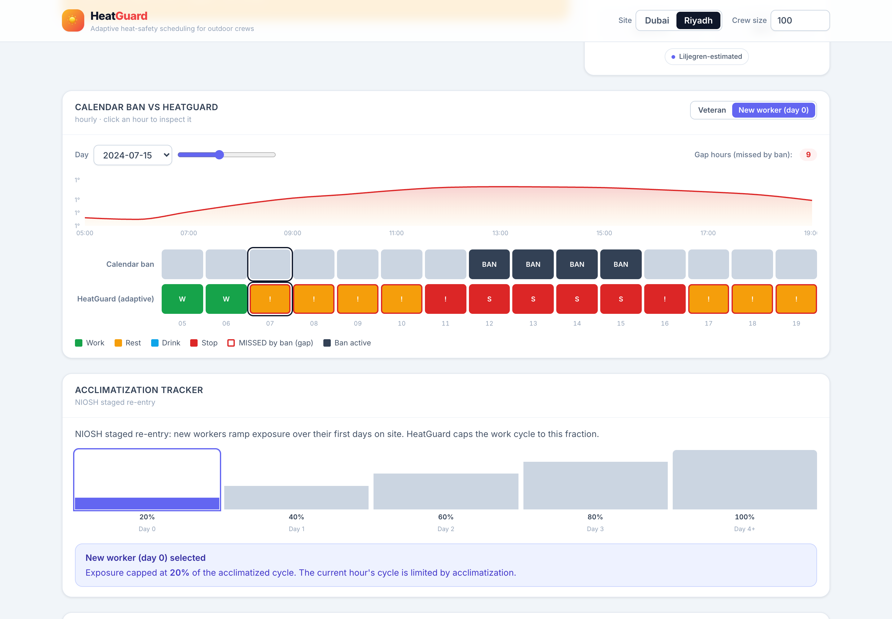

Adaptive occupational heat safety
HeatGuard is adaptive heat-safety scheduling that replaces the Gulf's blunt midday work ban with a condition-responsive, provable system.
The danger & the scale
Millions of people do heavy outdoor labour where the heat now exceeds what a human body can shed. The only widespread control is a fixed calendar ban — and it is wrong in both directions.
Migrant workers across the Arab States — the highest migrant-worker share of any region on Earth (41.4%).
All-cause migrant deaths per year. Over half are certified with no underlying cause — so heat-attributable mortality stays invisible.
Only one of nineteen migrant-worker heat studies worldwide came from the Gulf. The danger is unmeasured where it's worst.
The solution
A site-level, WBGT-driven work–rest–hydration scheduler for the supervisor — not a wearable. One sensor per site, near-zero cost per worker, riding on infrastructure crews already have.
Estimate WBGT from weather, or take one on-site reading from a ~$300 meter — per ISO 7243.
Outputs the real ACGIH/ISO 7243 work-rest cycle + ISO 7933 hydration target for these conditions and this job.
Broadcasts a single signal everyone understands: WORK · REST IN SHADE · DRINK NOW · STOP. Plus a NIOSH ramp for new arrivals.
Logs every decision to a tamper-evident, hash-chained, privacy-by-design worker-protection record — a compliance shield.



Impact
Modelled on a real intervention (La Isla / Adelante, Nicaragua): acute kidney injury down ~94%, productivity up 10–20%. Below: a regional slice of the Dubai season — illustrative, conservative.

Scale figures are illustrative and conservative, extrapolated from the per-crew model on real weather. The per-100-crew unit and the Nicaragua back-test are the verifiable backbone.
The business case
The headline benefit deliberately excludes the lives-saved and turnover terms, so it can't be accused of inflation — and it still pays for itself fast, plus a compliance shield against fines.
The deadliest group
A newly-arrived, unacclimatized worker is the group that actually dies — and the cheapest to protect, because it is pure scheduling. HeatGuard applies the NIOSH graded re-entry ramp and screens against the stricter Action-Limit table while a new worker acclimatizes, then relaxes as they adapt.

Why it's credible
ISO 7243, ISO 7933, ACGIH and NIOSH — WBGT via the validated Liljegren model. Nothing invented; the science is the cheap, proven part.
The impact model reproduces the La Isla / Adelante (Nicaragua) outcome — AKI −94%, productivity +10–20% — as a back-test that fails loudly if anyone changes an effect size.
79 automated tests with green continuous integration cover the table values, WBGT sanity, the scheduler logic, the hash chain, and the economics.
WBGT estimate vs on-site meter; effect-size transfer from Nicaragua agriculture to Gulf construction carries uncertainty; the cost/value assumptions are illustrative and deliberately conservative. The genuinely hard problem is adoption — which is why HeatGuard leads with productivity and the compliance shield.
How it works
Weather in, a provable schedule out — computed in exactly one place.
Free historical archive + forecast; cached for an offline demo.
→Validated outdoor heat-stress index, with a Stull night fallback.
→Work-rest cycle + PHS hydration target for these conditions.
→One broadcast signal and a hash-chained, tamper-evident record.
See the live dashboard run real Gulf weather through the engine — the signal, the timeline, the impact, and the ROI.